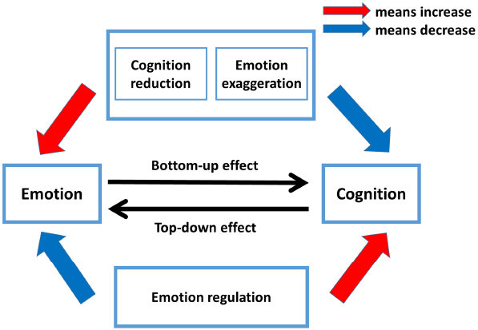

How Emotions are Contagious
Human emotions are contagious. They attract each other. Think about what happens to you when someone gets mad at you. You either sit there and take it or you get angry too. When you sit there and take it you too will get a bit of angry. There’s no way you’re fine with taking a beating. No one is going to take a beating for nothing. Emotions are contagious and it can be proven with human interactions.
We humans adapt to change in several different ways. We adapt to the heat by building ACs, we adapt to basically everything that’s possible within our range, think COVID, natural disasters, and even technology to some degree. This applies with emotions. People adapt and change their emotions based on the situation their in. No one is going to act the same way when they’re alone, on the internet, or with your friends. Everyone acts differently depending on their location of situation. Everyone is quiet and respectable in Libraries, (you should be if you don’t want to get kicked out) vs the parties where everyone is talking and having fun. That is emotional contagion. Simply put, Emotional Contagion is the process in which an observed behavioral change in one individual leads to the reflexive production of the same behavior by other individuals in close proximity (Panksepp and Lahvis, 2011). We, humans are niche constructors. That means that we play an active role in our evolution by creating and changing the environment to suit our needs which goes back to how we build ACs to combat the heat and the cold, bunkers to fight natural disasters and everything else that suits our survival. This relates to emotions because as I’ve said, we change our emotions based on where we’re located. In a way, emotions can decide who you are as well and if you live or die that day.
I’m very good at hiding my emotions, especially towards people I don’t know. The me people see at school is not the real me. It’s just a façade. I just act that way because it is the social norm. Norms are typical patterns of behavior, viewed by participants as the unwritten rules of everyday life. It is hard to combat the atmosphere so instead of combating the atmosphere, us humans don’t realize that we are always going along and towards the atmosphere that are enveloped. People hide their emotions because if you’re showing signs of anger, especially anger, people will look at you weirdly especially in that weird atmosphere. Especially because ever since we we’re little, we we’re taught that anger is a negative emotion. We are niche constructors and people follow norms all the time, when we see something out of the ordinary, we will judge them no matter how hard you try not to.
With the ever so rapid rate of technology improvement. Technology is improving every year with newer technologies. Older and powerful systems that are deemed to be super good today will become cheaper. So that means more people get access to the internet. The internet is where you can see a lot of emotions being contagious. Especially Twitter. Whenever there is a big controversy about a content creator, politician, or anyone that the media has eyes on. Things go to shit real quick. It usually takes a single post to rally up an entire hate cult against a person because that single post conveys a lot of emotions, people respond with their emotions and thoughts as well. Emotions are high contagious. It’s sort of like cocaine and drugs. Once your caught up in the heat of the moment, you have to let it all out or else it’s going to keep bothering you. Some of the anger stems from the stupidity of people online trying to vent and get angry at literally anything. Emotion can be a trigger to most things and once pulled, it is your decision if you want to stay in front of the bullet or dodge the bullet completely.
Emotions are highly contagious. It spreads from one place to another really easily and it can influence a lot of people at once. Take a look at motivational speakers, they play with your emotions to get you fueled up and motivate you. Therapists plays with your emotions as well, though they are trained to handle their emotions extremely well, that doesn’t make them immune. Areas where people excel at could be areas where they’re most vulnerable. Emotions are a dangerous weapon. It tell people what to do even if they don’t want to do it. It forces them into a fight or flight response. Which is a system that we have in order to react to situations that are either super stressful or super frightening. Overall, emotions are not something you can easily control and there are times where even the coolest and coldest person will crack the unbreakable ice that they’re in.
Programming in a Nutshell
Programming is almost everywhere today. Think about all the automated machines, computers that you use, the phones you’ve been stuck to for the past couple hours. Almost everything that happens in your day-to-day life is programmed. Programming is one of the main reasons why our technology has advanced so far. We need programmers to progress our technological advancement. By definition, programming means to provide something with coded instructions for the automatic performance of a task. But, how does a programmer work, and what skills are needed to become a programmer?
Programming nowadays is in the Computer Science industry. Due to the popularity and the amount of job opportunities in that industry, there is a lot of competition within this industry. In an interview with Arthur Jordan, the Coordinator of Career Development at the University of Arizona at the College of Science in Computer Science, he implied that having experience with personal projects will give you a ledge on others because not only are you demonstrating how to incorporate what you’ve learned on a real world application but you are also demonstrating the knowledge you have; so that in general will give you a ledge on others in this competitive industry. The companies and businesses need people who know how to incorporate their knowledge to a real-world application because Programming isn’t easy. There are a lot of things that are very different, and it varies within each different company or business.
Two of the skills that is important in the industry is to be able to problem solve and work together in groups. Arthur Jordan implies that communication and collaboration are an important skill in this industry. Being able to work and understand while also being able to explain it in a sense where everyone, regardless of background can understand it is a huge role and it shows your level of understanding and in general, makes you look good as well. Myself, going to become a programmer in a few years already experienced this kind of thing as I’ve myself tested for games that were being in the process of making and going to be released.
I’ve tested games that my online friends made a couple of times. And I know how handy it is to be straight forward and communicate with him on what needs to be changed and what needs to be improved upon. In a research paper titled, “The Impact of Conflict Judgements Between Developers and Testers in Software Development”, by Xihui Zhang, Jasbir S. Dhaliwal, Mark L. Gillenson and Thomas F. Stafford, it is said that relationships between the testers and developers are fundamentally different as testers looks for things to “break the building” whereas the developers try and look for a faster and easier way to “build the building”. From my experience while testing my friend’s game, this is true. Testers need to be able to break areas of the code in order for the developers to progress. Arthur Jordan also said, “often times hackers are enabling us to discover where certain holes and vulnerabilities are in our code”. Of course, testers and hackers are different but they’re essentially doing the same thing: looking for things to break, so when it’s rebuilt, it is stronger than before. So being able to communicate the holes and vulnerabilities well enough to the developers is an important asset in the Computer Science industry, and of course you gotta know how to fix the broken areas as well. Another area they covered in their paper was the difference in experience. While I was testing for my friend’s game, I didn’t have much experience in coding. I just told them what I thought needed to improve on and what bugs exist. A bug is referred to a flaw in a system’s design. Something that produces an undesired effect that needs to be fixed. Some bugs are miniscule while some bugs can completely destroy the balance. Of course it’s sort of a bit insensitive of me going “fix this fix that this needs a little bit of improvement and that in my opinion needs to be changed to this and that” but it also shows that because there’s this lack of skill and experience I didn’t know how hard it was. I could tell that he spent a long time coding everything and making sure everything ran the right way. Time for him was really important and he spent a lot of it coding.

 Time management is also another important skill. In this industry there are projects that requires a lot of work and to ensure that work is being done, there are deadlines sets. Everyone can manage their time, but it is how you manage your time is what’s important. Currently, I’m taking a opener class for my major and I must say, programming does take a lot of your time. Each program that I’ve written gave me this sense of pride because figuring it out and putting it into code really makes me happy even though while coding it, it was annoying as hell. However, being in a time crunch can really improve someone a lot. Arthur Jordan experienced this while he was working on the OSIRIS-Rex project for NASA, and this is what he had to say because of the time crunch he had. “The biggest one was learning how to ask better questions. Rather than going to you know my manager, my supervisor, and sitting down and saying, “Hey I don’t understand this can you help me?” I started to ask more direct and educated questions that helped me to have a better fundamental understanding of the entire system that we were utilizing but also it provided more mentorship opportunities.”
Time management is also another important skill. In this industry there are projects that requires a lot of work and to ensure that work is being done, there are deadlines sets. Everyone can manage their time, but it is how you manage your time is what’s important. Currently, I’m taking a opener class for my major and I must say, programming does take a lot of your time. Each program that I’ve written gave me this sense of pride because figuring it out and putting it into code really makes me happy even though while coding it, it was annoying as hell. However, being in a time crunch can really improve someone a lot. Arthur Jordan experienced this while he was working on the OSIRIS-Rex project for NASA, and this is what he had to say because of the time crunch he had. “The biggest one was learning how to ask better questions. Rather than going to you know my manager, my supervisor, and sitting down and saying, “Hey I don’t understand this can you help me?” I started to ask more direct and educated questions that helped me to have a better fundamental understanding of the entire system that we were utilizing but also it provided more mentorship opportunities.”
Having a solid understanding, good time management, and communication skills will really make you soar in this industry. Computer Science is not about how good one is, but rather it is about how to use the skills that you have, grow new skills, and implement those new skills into a real world application. There are a lot of opportunities out there and as Arthur Jordan said it, “If I can do it, anyone can”.